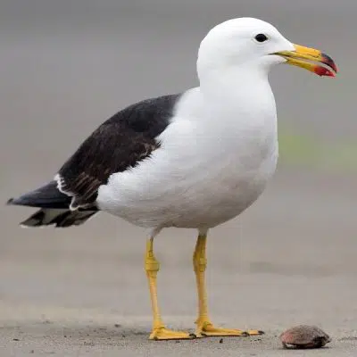

Hábitat
A las gaviotas se les puede localizar en todos los litorales de todos los continentes, a excepción de la Antártica. Se encuentran adaptadas a vivir en las cercanías de los ríos y en las orillas de los mares, disponiendo sus nidos lo más lejos del suelo para que sus depredadores no puedan alcanzarlos.
Se reúnen en grupos enormes, como citamos previamente, lo que incrementa la posibilidad de repeler el ataque de sus depredadores para evitar que atrapen a sus compañeros y la especie sea mermada.
Estilo de vida
Las gaviotas son aves muy sociales, disfrutan de estar en grupo y, en general, se sitúan sobre las costas, lagos o playas. Se cuidan mutuamente avisándose cuando hay peligro, e incluso si hay comida en las proximidades donde se encuentran.
Estas aves tienen una relación comunicacional muy estrecha, que se manifiesta principalmente en sus actitudes, llamados y movimientos. Todo se relaciona: la interacción entre ellos, la elección de la pareja, la protección del territorio. Son aves con una organización excepcional.
Caracteristicas
-
Adicional a los peces, se alimenta los huevos de otros pájaros
-
Hurtan el alimento de otras aves
-
Son de gran sociabilidad
-
A las gaviotas igualmente se les puede ver a solas
-
No se alejan de la orilla de la playa